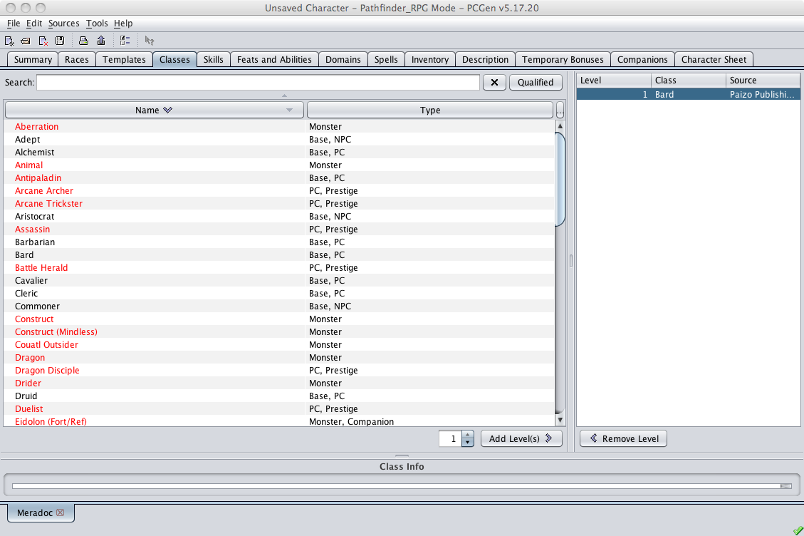

The Class tab is where you add class levels to your characters.

The left pane displays the full list of classes available from the loaded data sets. Besides PC classes, this list also includes all NPC and Creature classes. Clicking on the Qualified button will remove all classes that have requirements that the current character does not meet. An example of this would be a class with an alignment requirement, such as the Paladin which requires that the character be "Lawful Good". Finally, you can use the Search field to find the class you are looking for.
The right pane is where the character's classes appear as they are added. All classes previously selected, from this tab or from the Summary tab, will already be listed here. In this case, if you continue and select another class, either the same of a new class, the newly selected class will be added to the list.
The lower pane is the Class Info pane. When you select a class in the left or right pane this pane will display the basic information for the selected class.
Selecting a class is a simple process. Find and click on the desired class in the left pane and then click on the Add Level(s) > button. The class appears in the right pane, at the bottom of the list, and you are done.
If you wish to remove a class level you click on the < Remove Level button. The last class added will be removed from the character and from the right pane.